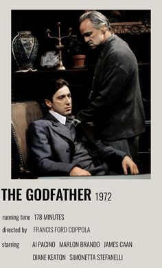
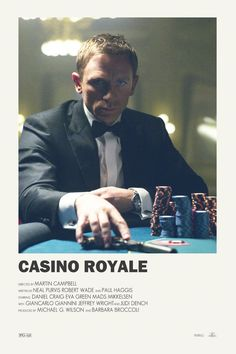

Las mejores sagas según los críticos
Cuando una historia necesita, dos, tres o 24 películas
El Padrino
Películas: tres. Coppola ha jugueteado durante años con una cuarta entrega, pero la saga parece cerrada y finiquitada para siempre.
Mayor valoración: El padrino (1972).
Menor valoración: El padrino 3 (1990).

Star Wars
Películas: seis episodios y contando. J.J. Abrams dirigirá el Episodio VII de la nueva trilogía y habrá películas dedicadas a personajes.
Mayor valoración: El Imperio contraataca (1980).
Menor valoración: El ataque de los clones (2002).

James Bond
23 y contando. Christopher Nolan suena para rodar la siguiente, de nuevo con Daniel Craig dando vida a 007.
Goldfinger (1964), Sólo se vive dos veces (1967) y Casino Royale (2006).
Vive y deja morir (1973), Muere otro día (2002) y Quantum of Solace (2008).
